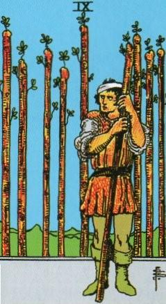
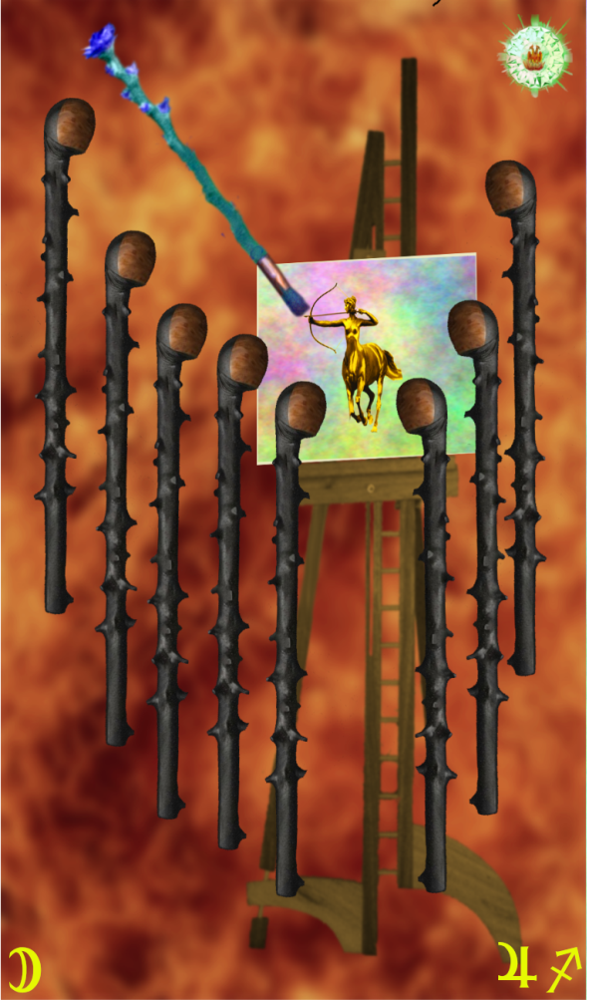
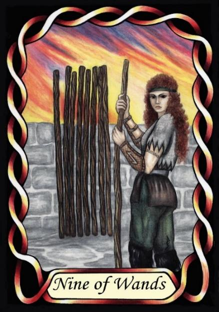

Nine of Wands



Sign |
|
Nine: change |
|
Sign Ruler |
|
Element |
Fire: change |
Modality |
|
Symbol |
Centaur |
Decan |
|
Decan Ruler |
|
Time |
Dec 3 -12 |
Originator Sagittarius II
A Journeyman of progressive change is out there, making change, finding new ways of doing things. They are ruled by Jupiter and the Moon, and so are big, creative thinkers. However, the rest of the population, especially those guardians of the past (Pages) dislike change, and will resist, often vigorously, resulting in bullying of the Journeyman.
Their Lunar nature makes them emotional and sensitive, possibly feeling bullied, even if they are simply being treated to their equal share of hazing. The Lunar influence does, however, tend to mend emotional issues, with each monthly cycle providing an opportunity to wipe the slate clean and start over.
Goldschneider Personology
Sagittarian individualism manifests in this decan as a highly creative streak, usually resulting in unusual and unique solutions to problems. This can be quite disturbing to others, and they can be subjected to bullying by the closed-minded.
RWS Imagery
A Sagittarius II with a bandaged head appears to have taken a beating from a group of other Wands. This demonstrates that his nature is different, peculiar, and so commonly a victim of bullying.
Summary
The Wands represents a Journeyman of progressive change, driven by Jupiter's expansiveness and Moon's emotional depth. They innovate and find new solutions, but may face resistance and bullying from those clinging to tradition.